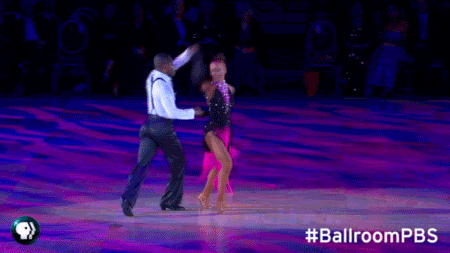

Современная хореография
Современная хореография
– это хореография, у которой отсутствуют обязательные движения и позы, основная ее цель – формирование и раскрытие индивидуальности и особенных черт каждого танцора. Формирование разнообразных стилей продолжается до сих пор.Современный танец состоит из огромного количества видов и подвидов танцевальных течений, поэтому считается самым обширным разделом в хореографическом искусстве. В него входят такие виды танцев как бальный, джаз, модерн, contemporary и другие чуточку менее популярные виды современного танца. Каждое направление имеет свои особенности, что делает современный танец богатым и ярким направлением в хореографии.
Виды современных танцев:
ДЖАЗ-ТАНЕЦ

Не смотря на своё название современный танец не так уж молод по сравнению с другими видами танцевального искусства. Например, джаз-танец представляет собой самый «зрелый» подраздел данного направления, так как своё начало он берёт в конце 19 века.
Джаз-танец имеет свои течения, которые отличаются как танцевальными приёмами, так и манерой исполнения. Это степ, фанк, соул, бродвей-джаз, классический джаз, афро-джаз, стрит, фристайл и многие другие виды.
Cамым молодым направлением джаз-танца является соул. Его отличительной чертой можно считать большое количество различных движений на единицу темпа, которые выполняются с максимальным растягиванием во времени.
Однако самым ярким видом современного танца является флэш-джаз, который поражает сложностью танцевальных трюков, виртуозностью и большим количеством танцевальных приёмов, что делает его схожим с бальным танцем.
Джаз-танец, особенно стрит-джаз, сыграл важную роль в развитии современного хореографического искусства и стал прародителем танцев-однодневок и молодежных танцевальных направлений, таких как буги-вуги, брейк, рэп, хаус. Вы, наверное, заметили, что названия танцев совпадают с распространёнными стилями современной популярной музыки.
БАЛЬНЫЙ ТАНЕЦ
Бальный танец сегодня – самостоятельный вид спортивного искусства, который был образован от смешения историко-бытового, джаз-танца, а так же социальных танцев-однодневок. В современном танцевальном мире бальный танец включает в себя латиноамериканскую и европейскую программы.
К латиноамериканской программе относятся такие танцы, как: Ча-ча-ча, Самба, Румба, Пасодобль, Джайв.
Исполнители европейской программы танцуют: Медленный вальс, Венский вальс, Медленный фокстрот, Квикстеп, Танго.
Данные виды современных танцев предполагают собой красивое движение не только тела, но и лица. Это предает бальным танцам еще большую выразительность и живость.
СТИЛИ СОВРЕМЕННОЙ ХОРЕОГРАФИИ
Хореографический стиль – это стойка система художественно-образных средств, приемов танцевального творчества, характерная для определенного исторического периода и авторского стиля в пределах общего направления. На сегодня каждое направление современной хореографии имеет по несколько стилей. Например: направление джазовой хореографии делится за такими стилями: бродвей-джаз, классический джаз, афро-джаз, флешь, стрит-джаз, слоу (лирический) -джаз, соул-джаз. Надо заметить, что современный танец имеет большую базу движений с возможностью собственной импровизации. Поэтому такие направления современной хореографии, как модерн, джаз и контемпорари используют термин«техника» который обозначает индивидуальный стиль или манеру выполнения, или методические аспекты индивидуального стиля от конкретного хореографа. Например: в направлении модерн танца определяются такие техники
- «Техника» Грем (Graham Technique) - техника танца модерн, созданная американской танцовщицей и хореографом Мартой Грем (1894-1991);
- «Техника» Хамфри-Вейдман (Humphrey-Weidman Technique) - техника танца модерн, в основе которой состоит теория действия падения что была усовершенствована танцовщицей Дорос Хамфи и Чарлзом Вейдманом в 1930-и гг..;
- «Техника» Лимон (Jose Limon Technique) - техника танца модерн, созданная танцовщиком и хореографом Хосе Аркадіо Лімоном (1908 - 1972) в I половине XX столетие;
- «Техника» Хортон (Lester Horton Technique) - техника танца модерн, созданная американским танцовщиком, хореографом и преподавателем танца Лестером Хортоном (1906 - 1953);
- «Техника» Хоукинс (Hawkins Technique) - техника танца модерн, созданная американским танцовщиком и хореографом Ериком Хоукинсом (1909 - 1994);
- «Техника» Канигхейм (Cunningham Technique) - техника танца постмодерн, разработанная американским танцовщиком, хореографом и преподавателем Мерсом Каннингхемом (нар. 1919);
- «Техника» релиз (Release based Technique) - техника танца, основанная на освобождение (релиз) некоторых групп мышц с целью получения привычек использования только тех групп мышц, которые необходимые в процессе выполнения тех или других движений.